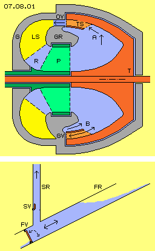
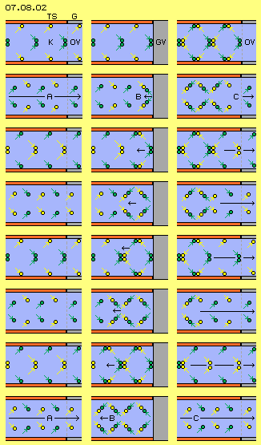
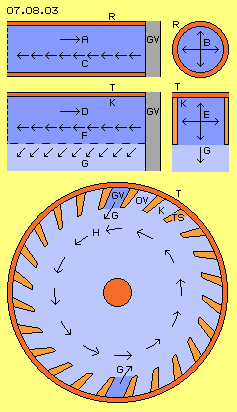
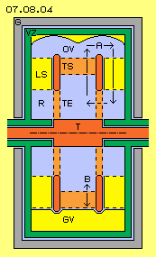
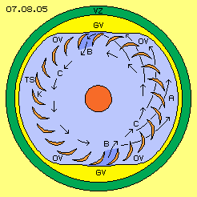
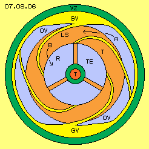
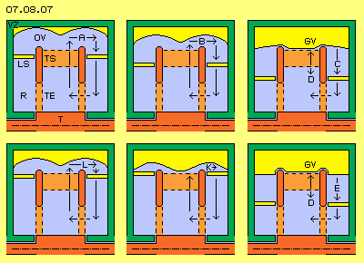
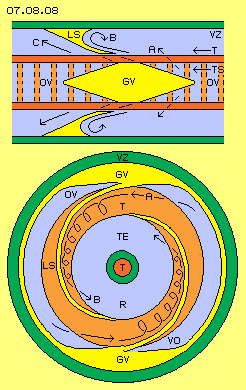
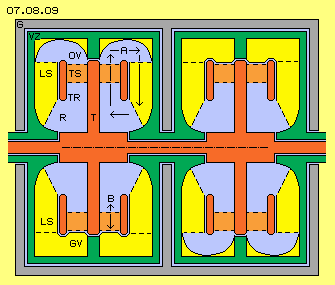

| Alfred Evert | 30.06.2008 |
07.08. Ram - Engine
Backstroke-Centrifuge
The following ´Ram-Engine´ is a variation more simple of ´Backstroke-Centrifuge´, which was presented at previous chapter. Basic construction of that Backstroke-Centrifuge is shown at picture 07.08.01 by cross-sectional view and here once more discussed in brief. Within housing G (grey) hollow-shaft (dark green) of a pump P (green) is mounted. That pump transports working-medium (blue, because here water is assumed) from left to right into a turbine T (dark red). Water thereby is also pushed into turning sense of system (assumed all times left turning around system axis). Turbine is also mounted within housing respective at previous hollow-shaft of pump.

Inner space of turbine is bordered by surfaces, which at centre are shaped like round cone and outside are shaped like hollow truncated cone. Rotating water is pressed outward by centrifugal forces and is pressed alongside diagonal wall towards left (see arrows A). There, turbine-blades TS (light red) are installed, curved backward in turning sense of system. Turbine-canals are build between each two turbine-blades. Water within these canals is redirected and thus turning momentum of turbine is generated.Water flows off turbine through open valves OV, which are openings between housing and housing-ring GR (grey), which is a stationary constructional element. Water further on flows through guiding-fins LS (yellow) between housing and housing-ring, back inward to central backflow-area R. Water there again comes to pump and thus is moving within closed circuit.
Outlet of turbine is not free anywhere, but is closed at some positions (preferred two) like marked downside at cross-sectional view as closed valve GV. Whenever a turbine-canal glides along that wall, flow within canal abruptly becomes stopped. Vehement backstroke occurs, running back within canal as most fast pressure wave (here towards right side, see arrows B). As turbine is steady turning, continuously these pulsating pressure waves come up, which are directed forward in turning sense of system. Thus water within inner space of turbine is pushed into rotation around system axis. Previous pump thus is demanded only for starting system and for controlling functions.
Hydraulic Ram
This machine rebuilds movement process of old construction of ´Hydraulic Ram´. That basic conception is sketched at this picture 07.08.01 downside. Water (blue) flows down within falling-pipe FR. Flow abruptly becomes stopped by closing valve FV. Pressure wave of backstroke also runs upward within lifting-pipe SR and there pushes water upward. Afterward, valve of falling-pipe is opened again and original flow comes up again by gravity force. Water within lifting-pipe can not flow down as same time valve SV is closed.
That ram pumps water much higher than water surface of falling-pipe. By suitable measurements, e.g. additional air-pressure areas, efficiency can achieve up to 70 percent. That´s rather remarkable for such a primitive fluid-machine.
Finally, pressure wave of that ram disappears at water surfaces. Here however at that Backstroke-Centrifuge, this principle movement process is integrated within continuously rotating system. Outlet of turbine-canals glide along open and closed ´valves´. Pressure wave of backstrokes affect completely and constantly pulsating onto rotating water within turbine. Centrifugal forces of rotating water again affects previous flow along diagonal turbine-wall. When turbine-canals glide along open valves, flow is transferred into turning momentum. When each turbine-canal temporary glides along closed valve, flow corresponds to that within previous falling-pipe of hydraulic ram respective is trigger for backstroke effect.
Flow within Canal
Details of construction of that Backstroke-Centrifuge are described at previous chapter and thus must not be repeated here. However at the following, movement process of flow, abrupt deceleration and following re-acceleration is discussed some more detailed. At picture 07.08.02 are sketched different situations at eight rows within three columns. That canal K is build between each two turbine-blades TS (red). Representative for water (blue) are drawn diverse pairs of particles (alternating green and yellow). Arrows show ways these particles moved within each last time-unit.
When solid bodies move, all particles practically move parallel forward (apart of small local trembling of atoms and molecules within grid of material). At flows of gases and liquids however, particles not only are moving forward but are running at much longer ways into all directions. Forward-movement practically is only secondary overlaying direction on general ´chaotic´ molecular movement. At this picture, that ´forward-trembling´ of particles is sketched by these zigzag-ways. Particles are reflected when hitting onto wall resp. exchange directions when colliding with partner-particles.

At left column, canal K momentary is positioned in front of open valve OV of housing G (grey). With flow A, particles fly at these zigzag-ways through canal K and fly off through outlet towards right side. One pair of particles wanders through that section of canal within eight time-units, like here sketched by these eight rows of left column.
Backstroke
At middle column now situation is sketched where canal momentary is positioned in front of closed valve GV. Previous flow now abruptly ends at housing-wall (grey). At first row of that middle column, green particle-pair hits onto that barrier. Particles are rejected at that wall and fly back towards left (see arrow B of second row).
Already at ´half way´ they meet with particles following up and now also their forward-movement becomes stopped resp. also these particles now are pushed back. At eight rows of middle column, again situations after each eight time-units is sketched. Arrows mark each front-side position of pressure wave, which ´races´ backward within canal.
This picture makes obvious, how pressure respective density increases: at left column are drawn eight particles within that canal-section, finally sixteen particles gather at middle column. So that situation can come up only by compressible fluid, i.e. when using water as working medium, that pressure wave runs back much faster.
At closed valve thus not only flow comes to ´standstill´, but rejection at that wall is forwarded as backward directed motion in shape of that pressure wave by sound-speed. Only that relative slow speed of flow is decelerated, however resulting of is that directed movement in speed-ranges of multiple faster molecular movements.
Re-Acceleration
At right column of that picture 07.08.02 now following situation is shown, where canal momentary got into position in front of next open valve OV. Particle-pair most right now again can flow off through opening (see arrow C of second row).
Each neighbours left side thus now again find space to fly longer distances towards right side. Whenever particles are pushed towards right, occasionally by just normal chaotic molecular movement, they fly longer distances into these new available spaces. So they are no longer available as collision-partners at original location. Each longer arrow C at rows of left column shows, how that ´dam-up-situation´ disappears. Increased density of gases thus disperses as fast as compression was build up. Also water starts flowing immediately after barrier is removed, simply because normal molecular movement takes new additional spaces.
Pressure, Decompression, Rotation

Picture 07.08.03 once more shows these movement processes. Within pipe R (red) momentary exists flow A from left to right. When outlet of that pipe comes in a position in front of closed valve GV, flow is stopped and compression comes up. That pressure spreads into any direction, like marked by arrow B at cross-sectional view through pipe at right side of picture.Decompression only can occur by backward directed motion within pipe, like marked by arrow C at longitudinal view through pipe left side of picture. Independent from flow-speed, that pressure wave runs back through pipe by sound-speed (and at previous hydraulic ram thus raises water upward within lifting-pipe).
At turbine (red) of previous Backstroke-Centrifuge, between each two turbine-blades canal K was build, which is open towards centre (see second row of that picture, left side by longitudinal and right side by cross-sectional view). If flow D within that canal abruptly is stopped by closed valve GV, compression-pressure E again spreads into any direction. Decompression comes up by backward racing pressure wave F. In addition now however, that backstroke-movement also can run inward, like here marked by arrows G.
At bottom of this picture 07.08.03, once more cross-sectional view through Backstroke-Centrifuge of previous chapter is sketched. Turbine-blades TS (light red) are arranged some diagonal, so canals K open towards inside-forward. As long as outlet of canal glides aside of long-stretched open valve, water can flow off free (and redirection of flow at curved turbine-blades generates turning momentum).
At the following however, each canal comes into position of closed valve GV. Here for example two such positions are marked (dark blue, upside and at bottom). Flow becomes stopped abruptly and backstroke results sound-fast pressure wave. Here is marked previous inward directed motion-component G. These hits occur all times at these positions, pulsating out of each canal which are turning around. So continuously water of inner space of turbine is ´punched´ ahead in turning sense of system and thus rotation H of water is accelerated. Based on centrifugal forces, water within canals again presses outward and thus closed circuit-process of that system exists.
Basic Conception of Ram-Engine

That Ram-Engine is a variation of previous Backstroke-Centrifuge with some more simple and symmetric construction. One essential difference is, here outlet of turbine runs into radial direction. Principle construction of Ram-Engine schematic is shown at picture 07.08.04 by longitudinal cross-sectional view.Turbine T (red) is mounted within housing G (grey) and turbine in principle exists by two disks. Outside between disks are installed turbine-blades TS (light red). Inside at these disks are openings representing inlet TE (light red) of turbine. So water (blue) flows from both sides in axial direction into turbine, then flows outward through turbine-blades and leaves turbine radial.
Whole turbine is surrounded by a ´valve-cylinder´ VZ (green). That constructional element practically is a section of a pipe, at both ends closed by disks. Hollow shaft of valve-cylinder also turnably is mounted within housing. At first however is assumed that valve-cylinder won´t turn.
Within valve-cylinder, guiding-fins LS (yellow) are installed, guiding water back to centre. Water then flows via backflow-area R into turbine-inlet TE. That general flow-circuit is marked by arrows A.
Free space outside of turbine-blades towards inner wall of valve-cylinder represents area of ´open valve´ OV, like sketched at this picture upside. However at some positions (preferred two) inner wall of valve-cylinder is some more inward. There is area of ´closed valve´ GV, like marked at bottom of that longitudinal cross-sectional view. Flow out of turbine-canals thus is hindered, resulting backstroke pressure-wave, like marked by double-arrow B.
Revolving Valves
At picture 07.08.05 cross-sectional view of turbine-area schematic is drawn. That ´pipe´ of valve-cylinder VZ (green) has varying contours at its inner surface (here marked yellow). At areas of wide distance to turbine-blades TS (light red) ´open valves´ OV exist (here relative long sections at left and right side). Areas with small distances build ´closed valves´ GV (here relative short sections upside and at bottom). Turbine turns within that valve-cylinder, so that varying distances practically function like ´revolving-valves´.

At this cross-sectional view, turbine-blades TS (light red) show crescent-shaped contour, outside curved backward (in turning sense of system). Canals K are build between each two turbine-blades. Turbine and all water within is turning around system axis and water presses outward based on centrifugal forces. Water thus moves outward and forward within space, like marked by arrows A. Flow presses onto bladed respective flow is redirected and some decelerated, so turning momentum is generated.When outlet of canal comes near closed valve, water no longer can flow off free (canals marked dark blue). Outward-component of flow is hindered, so flow can escape only forward-inward. Just into that direction, also pressure wave of backstroke shows (see arrows B).
Within that canal, pressure-wave runs inward-forward and hits water inside of turbine by speed of sound. All waters there already rotate around system axis and now in addition are pressed forward by these pressure-waves. That pulsating drive accelerates rotating flow C. Resulting centrifugal force presses water outward within canals, so previous turning momentum is generated at turbine-blades.
Guiding-Fins
In general, water flows outward through turbine, then moves towards left and right side and back through backflow-area into central turbine-inlet again. That backflow within valve-cylinder schematic is shown at picture 07.08.06 by cross-sectional view, thus showing axial level aside of turbine.

Free flow from turbine-outlet at area of open valves here is marked by arrow A. At area of closed valves, inner-wall of valve-cylinder is curved some inward, so that outlet-flow off turbine is hindered. That inward curved inner-wall presses inward also water aside of turbine, which now must move further inward through valve-cylinder, back to turbine-inlet.That function is done by guiding-fins LS (yellow) which are fix installed at valve-cylinder VZ (green). These fins are spiral curved inward, so water is guided to central backflow-area R, like marked by arrow B. Starting from each closed valve, one guiding-fin should be arranged. Here for example are drawn two additional guiding-fins.
That backflow-area is aside of turbine, which glides along these guiding-fins. At background of that cross-sectional view is marked that sideward surface of turbine T (light red). This ring-shaped surface is connected with turbine-shaft by some rods (light red, here for example three). Water from backflow-area of valve-cylinder flows through these rods respective these inlet-openings TE into turbine.
Contours of Valves
Picture 07.08.07 shows a part of valve-cylinder VZ (green) and turbine T (red) by six different positions of rotation. Upside left shows situation of open valve OV, where water (blue) can flow off canals between turbine-blades TS (light red) to left and right side. Arrows A mark that circuit through backflow-area R back to turbine-inlet TE.
While turbine is turning, turbine-canals come to different positions, like sketched at following parts of picture. Also guiding-fins LS (yellow) here are drawn at their different places of these cross-sectional views. These guiding-fins are spiral curved inward, so at the following are drawn with decreasing distance to system axis.
Upside middle of picture, situation of transition from open to closed valve is shown. Inner surface (yellow) of valve-cylinder now is shifted some inward. Cross-sectional surface of turbine-outlet B thus is reduced.

Upside right of picture, now valve GV is closed. Water within valve-cylinder (left and right aside turbine) moves further inward, like marked by arrow C. Outlet of turbine-canal is closed, so pressure wave of backstroke results, like marked by arrow D.At second row, right side of picture is shown, that valve GV keeps closed for some time. At left and right side, inner surface of valve-cylinder is shifted further inward and also these spiral curved guiding-fins here are positioned some more near system axis. Thus water there is further pushed towards centre, like marked by arrow E.
At middle of downside row of that picture, situation is shown where valve starts opening and where new guiding-fin begins. Inner surface of valve-cylinder now is further outside, so water again can flow off turbine, like marked by arrow K. That ´new´ water flows along outer surface of guiding-fin, while previous ´old´ water still is guided inward by inner surface of guiding-fin.
At bottom left side of this picture, opening of valve did go on, so outlet off turbine becomes stronger flow L. If finally valve OV is completely opened, situation shown upside left of picture comes up again.
Like Snowplow
At following picture 07.08.08 a view from outside to turbine-outlet is sketched (so showing view into radial directions). Within valve-cylinder VZ (green), turbine T (red) is turning, here moving from right to left. Between both disks of turbine are installed these turbine-blades TS (light red), which here thus also are moving from right to left. Wide distance between turbine-outlet and inner surface of valve-cylinder represents open valve OV, where water can flow off turbine, free to both sides, like marked by arrow A.
That distance between turbine-outlet and valve-cylinder now becomes smaller. Reduction of cross-sectional surface could be done abruptly. However it might be advantageous, water is pushed progressive aside before each turbine-canal completely is closed. That gradual closing of valve (similar to a symmetric snowplow) here is sketched as yellow rhombus GV.

Also following opening of valve OV should occur gradually, so flow C can start. Optimum shape of inner surface of valve-cylinder probably will be achieved only by practice. Closing of valve results pressure wave of backstroke and thus essential acceleration of water rotation. However also shape of re-opening valve is essential for optimum process of flows.
Contours of Guiding-Fins
Upside of picture 07.08.08 by radial view, also these guiding-fins LS (yellow) are drawn, which are fix connected with valve-cylinder VZ (green). As water flows off turbine in diagonal directions (see arrows A and C), also these guiding-fins should be arranged diagonal (by this radial view, in addition spiral curved in axial view). Here for example, frontside contour is flat directed forward (in turning sense), while backside contour is rounded and finally showing backward).
Water is guided inward along surfaces of these guiding-fins, however water within whole space between side-surfaces of valve-cylinder and turbine-disks is moving towards centre. That turbine-sidewall (plus water sticking at that surface) is turning along edges of guiding-fins. These edges ´scrape off´ water and water is pressed aside. Within previous rounding of guiding-fins, thus comes up a vortex, like marked by arrow B.
At bottom of picture 07.08.08, once more a cross-sectional view through area of backflow is drawn. Here however only two guiding-fins LS (yellow) are drawn, both outside starting at area of closed valves GV and spiral curved inward. Flow from open valve OV once more is marked by arrow A.
Ring-shaped side-face of turbine T (light red) is turning, while guiding-fins are stationary (as assumed up to now). So at these guiding-fins, respective within their roundings, that vortex B exists. There comes up real vortex-string, wandering along spiral track towards centre. That vortex-flow arrives at backflow-area R with spin in turning sense of system, practically just like water within turbine-inlet TE is turning (by that view marked as background of picture).
Optimum Backflow
These vortex-strings are fed by water flowing off turbine-outlet at both sides. Vortices like these affect backward within their flows, i.e. each vortex-string by itself is pulling off water from turbine-outlet, just like strong suction. Drive of vortices is done by surfaces left and right side of turbine. In addition, these vortices are pushed towards centre along spiral-inward curved guiding-fins.
At the other hand, water within turbine is pushed into rotating sense by backstrokes, so also water within turbine-inlet is fast turning, same sense like previous vortex-strings. So also from turbine-inlet these vortex-strings are pulled into turbine.
Rotating water automatic wants to move outward and thus can be transported inward only by special conditions. Backflow-areas in general should show wider cross-sectional surfaces, so flow speed is reduced and thus also centrifugal forces are weaker. In addition, inward-track should be flat, these guiding-fins thus should show shape of long stretched spiral. Side-surfaces of turbine work practically like a pump, as water is sticking at these faces. Movement of water around system axis is overlaid by previous discussed vortex-movements. These vortex-strings show few resistance when they are shifted inward. Same time these vortex-strings are sucked in by fast-turning water at area of turbine-inlet. Quit similar, these vortex-strings pull off water from turbine-outlet.
Naturally optimum backflow is achieved only by tests with different shapes of guiding-fins and variation of available cross-sectional surfaces. In general however, that Ram-Engine demands no separated pump for backflow of water, but water will circuit based on rotations and overlaying vortices.
Optimised Design
So water is accelerated in fitting turning sense already by these backflow-vortices. However that twist-flow should be allowed to enter turbine-inlet unhindered. Already at previous picture, that space was drawn without turbine-rods and a corresponding conception is shown at following picture 07.08.09 by longitudinal cross-sectional view.

At this version, turbine T (red) exists of turbine-shaft, at which a round disk is fixed. Outside at that turbine-disk at both sides, turbine-blades TS (light red) are installed. These turbine-blades left and right side are bordered by ring-shaped face, which here is marked as turbine-ring TR (dark red). So that symmetric assembly represents a turbine wheel, which at the middle is fix connected with turbine-shaft via turbine-disk.At areas of open valves OV, water flows off turbine towards left and right side, building circuits like marked by arrow A. At areas of closed valves GV, outlet flow off turbine is stopped and pressure wave of backstroke B comes up. At these areas of closed valves, guiding-fins LS start and take space here marked as yellow areas. Contours of backflow areas naturally should show smooth surfaces, like here sketched as an example. Here also is shown, guiding-fins well could reach some further inward.
The shorter radius of rotating masses is, the stronger centrifugal forces come up. So that machine should be rather compact, e.g. housing of that motor should show diameter of maximum 50 cm. At one axis well could be installed several modules. Here for example two modules are sketched and that ´four-cylinder-motor´ could be only half metre long. This engine can drive fast revolutions, so probably each one closed valve will do (like here sketched downside of left module and upside of right module).
Operating Modes
So this Ram-Engine is different to previous Backstroke-Centrifuge at first by turbine-outlet into radial directions. Second, that Ram-Engine demands no separate pump because sideward faces of turbine function like pump by generating these vortex-strings of backflow. Third difference is that valve-cylinder VZ, which includes turbine in total and is mounted within housing. Up to now, that cylinder was assumed to rest, however that constructional element well is turnably. Gradual rotation of valve-cylinder serves for control of machine. Therefore hollow-shaft of valve-cylinder should be combined with controllable drive-unit and also shaft of turbine should be coupled with an electric motor-generator.
For starting system, turbine is put into rotation and thus all water within turbine will turn around system axis. Based on centrifugal forces, water pushes outward and flows off free through open valves. Every turbine-canal in succession comes to area of closed valve. Outward-flow temporary is stopped and system accelerates immediately and autonomous by pulsating pressure waves of each backstroke.
At turbine-shaft now is available wanted turning momentum and system must be weighted, e.g. for drive of an electric generator. If load is fitting, system will run constant revolutions - if valve-cylinder does not turn (like assumed up to now). Guiding-fins press water inward respective water flow affects pressure onto guiding-fins. Previous constant performance thus is only available, if valve-cylinder is kept in its position.
However, performance of system is variable, if valve-cylinder by itself is turning: increasing rotation of water is achieved, if backstrokes occur more frequent. This is achieved, when valve-cylinder is turned contrary to turbine turning-sense. Opposite, frequency of backstrokes becomes lower, if valve-cylinder is allowed to turn in turning-sense of turbine. So depending on turning-sense and gradual turning-speed of valve-cylinder, turbine will deliver stronger or weaker turning momentum respective performance.
This system is self-accelerating and will ´go off´, if valve-cylinder is blocked and turbine-shaft is not weighted by corresponding load. At the other hand, if valve-cylinder is allowed to turn idle, its rotation at first rises to turbine-revolutions. Less or finally no backstrokes occur and based on general friction losses, system will slow down until standstill. So danger of self-destruction exists at certain situation, at the other hand that machine is well controllable.
Objectives
That simple old ´Hydraulic Ram´ works by absolutely reliable effect and remarkable efficiency. If that movements principle analogue is used within closed rotor-system, by sure it will work even more effective. Pressure waves can not evaporate towards outside, but must run all around within system. Rotation of working medium thus continuously becomes accelerated by pulsating pressure. Only small part of all flows abruptly must be decelerated at areas of closed valves. Generated centrifugal forces pushes all water outward and main part of that radial resp. tangential flows is transferred into turning momentum via turbine-blades.
At closed systems, often come up problems at backflow of water (contrary to its centrifugal forces) to central inlet of turbine. Measurement here shown, with these guiding-fins and generation of vortex-strings and suction-effect of these twisting movement pattern, however produces that backflow by minimum input of power.
Naturally first attempt of construction of that machine might not result real effective engine. Optimum performance probably will demand many tests and experiments to find fitting dimensions and shapes of all surfaces, within turbine and valve-cylinder and its backflow area. At the other hand, all laws of that fluid-technology are well known and effects here used are common understanding.
This engine is real compact construction and thus is predestined for mobile use. Wide range of stationary energy-demands are covered by diverse technologies using regenerative sources of energy. However just for drive of vehicles no real or effective alternative to combustion-engines is available up to now.
General suitability of that conception could be approved by experiments within few months and it will take only few years to reduce consumption of fossil fuels by this ram-drive-system. Many readers might doubt, that searching for generally other solutions might make sense - however without any doubts, oil and gas will soon run short. So it makes no sense to search for partial improvements, but it´s high time to research real alternatives.
| 07.09. Repulsine-Re-Design | 07. Fluid-Machines |